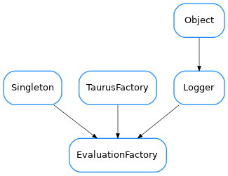

EvaluationFactory¶

-
class
EvaluationFactory[source]¶ Bases:
taurus.core.util.singleton.Singleton,taurus.core.taurusfactory.TaurusFactory,taurus.core.util.log.LoggerA Singleton class that provides Evaluation related objects.
-
DEFAULT_AUTHORITY= '//localhost'¶
-
DEFAULT_DATABASE= '_DefaultEvalDB'¶
-
DEFAULT_DEVICE= '@DefaultEvaluator'¶
-
elementTypesMap= {18: <class 'taurus.core.evaluation.evalauthority.EvaluationAuthority'>, 3: <class 'taurus.core.evaluation.evaldevice.EvaluationDevice'>, 13: <class 'taurus.core.evaluation.evalattribute.EvaluationAttribute'>}¶
-
getAttribute(attr_name, **kwargs)[source]¶ Obtain the object corresponding to the given attribute name. If the corresponding attribute already exists, the existing instance is returned. Otherwise a new instance is stored and returned. The evaluator device associated to this attribute will also be created if necessary.
Parameters: attr_name ( str) – the attribute name string. Seetaurus.core.evaluationfor valid attribute namesAny aditional keyword arguments will be passed directly to the constructor of :class:EvaluationAttribute
Return type: EvaluationAttributeReturns: @throws TaurusException if the given name is invalid.
-
getAuthority(name=None)[source]¶ Obtain the EvaluationDatabase object.
Parameters: db_name ( str) – this is ignored because only one database is supportedReturn type: EvaluationDatabaseReturns:
-
getDevice(dev_name)[source]¶ Obtain the object corresponding to the given device name. If the corresponding device already exists, the existing instance is returned. Otherwise a new instance is stored and returned.
Parameters: dev_name ( str) – the device name string. Seetaurus.core.evaluationfor valid device namesReturn type: EvaluationDeviceReturns: @throws TaurusException if the given name is invalid.
-
schemes= ('eval', 'evaluation')¶
-